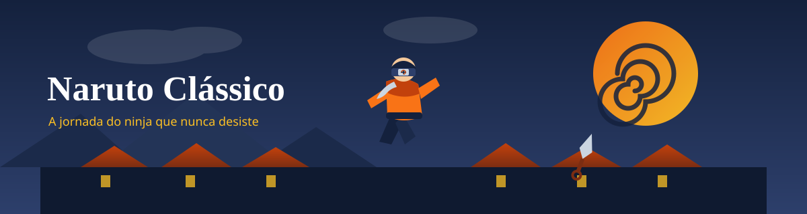
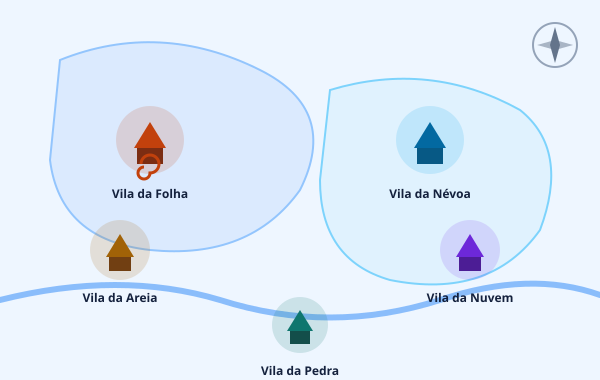
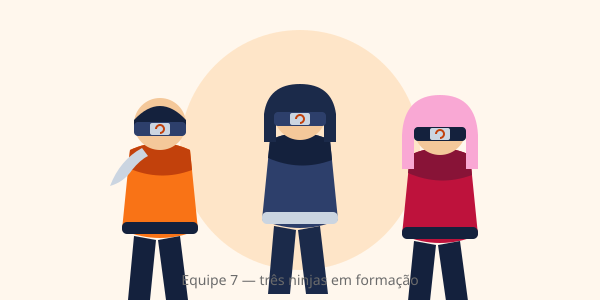

Naruto Clássico

Naruto Clássico é a denominação informal dada ao primeiro bloco da franquia Naruto, criada pelo mangaká Masashi Kishimoto. Abrange o mangá publicado entre e e o anime transmitido de a .
O período é chamado de Clássico porque antecede o arco de tempos modernos, conhecido como Naruto Shippūden. A obra acompanha Naruto Uzumaki, um jovem ninja rejeitado por sua vila, enquanto treina para se tornar Hokage — o cargo mais alto entre os ninjas.
Sinopse
A história se passa em um mundo onde organizações militares escondidas — as vilas ocultas — treinam ninjas para cumprir missões a serviço de seus respectivos países. Naruto Uzumaki é filho do Quarto Hokage e carrega dentro de si a Nove-Caudas (Kyūbi), uma besta-cão capaz de destruir uma vila inteira.
Por causa dessa prisão forçada, Naruto é evitado pelos moradores. Apesar disso, ele rejeita o isolamento e responde ao preconceito com determinação e humor. Ao concluir a academia ninja, é integrado à Equipe 7, sob o comando de Kakashi Hatake, ao lado de Sakura Haruno e do rival Sasuke Uchiha.
“Eu não rejeito a vila. Aqueles que rejeitam a mim é que são o verdadeiro problema — e é por isso que eu vou me tornar Hokage.”
Produção
Origem
Kishimoto começou a esboçar a ideia quando ainda estudava na faculdade de artes, buscando um projeto que pudesse ser publicado em revista. A proposta original era uma história mais curta e humorística; a vila ninja foi adicionada depois, quando o autor percebeu que precisava de um cenário capaz de sustentar arcos mais longos.
O traço sofreu mudanças entre o one-shot piloto e o seriado definitivo. Naruto ganhou óculos na versão inicial — marca que foi removida para facilitar o desenho da expressão facial do personagem.
Publicação
O mangá foi serializado semanalmente na revista Weekly Shōnen Jump, da Shueisha, entre 3 de setembro de 1999 e 10 de novembro de 2014, reunindo 72 volumes na coleta oficial. O primeiro bloco — o Clássico — ocupa aproximadamente os volumes 1 a 27.
Nota sobre os nomes
Durante a exibição no ocidente, os nomes foram adaptados: a vila Konohagakure passou a Aldeia da Folha e o termo shinobi foi traduzido por “ninja”. Adaptações semelhantes ocorrem com taijutsu, ninjutsu e genjutsu.
Enredo
Magia ninja e chakra
O sistema de poder baseia-se no chakra, energia formada pela combinação de energia física e mental. Os ninjas canalizam chakra pelas mãos para executar técnicas classificadas em três categorias básicas: taijutsu (combate físico), ninjutsu (técnicas ofensivas e de transformação) e genjutsu (ilusões que manipulam os sentidos do adversário).
Existe ainda uma quarta categoria, aplicada apenas por ninjas de nível elevado: o kekkei genkai, traço herdado geneticamente que não pode ser aprendido por treino.
As cinco nações
O continente é dividido em cinco grandes nações, cada uma abrigando uma vila ocultas e comandada por um Kage. O mapa abaixo mostra a disposição dessas vilas:

| Nação | Vila oculta | Elemento | Título do líder |
|---|---|---|---|
| País do Fogo | Konohagakure (Folha) | Fogo | Hokage |
| País do Vento | Sunagakure (Areia) | Vento | Kazekage |
| País da Terra | Iwagakure (Pedra) | Terra | Tsuchikage |
| País do Trovão | Kumogakure (Nuvem) | Trovão | Raikage |
| País da Água | Kirigakure (Névoa) | Água | Mizukage |
| O Kazekage e o Raikage recebem o prefixo do elemento no nome. Já os demais usam o nome do próprio elemento. | |||
Personagens principais

Equipe 7
A Equipe 7 é o grupo de ninjas em torno do qual gira toda a trama. Seus integrantes são apresentados já na primeira missão da série:
- Naruto Uzumaki — portador da Nove-Caudas. Detesta ser ignorado e luta por reconhecimento.
- Sasuke Uchiha — último sobrevivente de um clã exterminado. Persegue vingança contra o próprio irmão.
- Sakura Haruno — ninja de suporte, dedicada aos estudos na academia.
- Kakashi Hatake — sensei da equipe, veterano de múltiplas guerras.
Os Hokage
- Primeiro Hokage
- Hashirama Senju, fundador da Vila da Folha, conhecido por técnicas de madeira.
- Segundo Hokage
- Tobirama Senju, irmão do fundador, responsável pelo sistema acadêmico ninja.
- Terceiro Hokage
- Hiruzen Sarutobi, o “Professor”, comandou a vila por mais de uma década.
- Quarto Hokage
- Minato Namikaze, pai de Naruto, selou a Nove-Caudas ao custo da própria vida.
Principais arcos narrativos
- Vila da Onda — primeira missão da Equipe 7, contra um grupo de mercenários que controla uma ponte estratégica.
- Prova de Iniciação — torneio entre alunos de todas as vilas para ascender à categoria chūnin.
- Busca por Tsunade — recrutamento da nova Hokage junto ao médico lendário Jiraiya.
- Exame Chūnin (fase final) — confrontos decisivos, incluindo a invasão da vila pelo vilarejo oculto da areia.
- Retirada de Sasuke — última missão do arco clássico, quando o rival parte para a vila da névoa em busca de poder.
Recepção
Naruto tornou-se um dos mangás mais vendidos da Shueisha, com dezenas de milhões de volumes comercializados. A série é frequentemente citada ao lado de One Piece e Bleach como uma das obras definidoras da tria shōnen dos anos 2000.
Críticos destacam o desenvolvimento dos antagonistas: muitos vilões da
série são apresentados como reflexos distorcidos do próprio protagonista,
o que dá peso moral às batalhas. Por outro lado, o anime é
amplamente elogiado por seu ritmo criticado pelo uso frequente
de episódios de filler — trechos não presentes no mangá.
Prêmios
- Prêmio de Mangá Shōnen da Shueisha — vencedor em 2003
- Indicado ao Premio Tezuka Osamu de melhor obra
- Reconhecido como um dos maiores sucessos da revista Weekly Shōnen Jump
Curiosidades
- A cor preferida de Naruto é o laranja, a mesma usada pela própria equipe de produção.
- O sobrenome Uzumaki significa “espiral” no japonês — presente na cauda do rapaz e na insignia da vila.
- Kishimoto desenha as mãos das personagens como sendo a parte mais difícil de qualquer painel.
- A quantidade de número de episódios do primeiro anime chegou a 220 antes de iniciar a segunda fase.
- O personagem Kakashi nunca é visto sem máscara durante toda a série.
Transmissão
| Série | Período | Episódios | Rede |
|---|---|---|---|
| Naruto (Clássico) | out/2002 — fev/2007 | 220 | TV Tokyo |
| Naruto Shippūden | fev/2007 — mar/2017 | 500 | TV Tokyo |
| Boruto | abr/2017 — mar/2023 | 293 | TV Tokyo |
| A produção do anime ficou a cargo do estúdio Pierrot, que assinou igualmente a continuação. | |||
Mídias relacionadas
- Mangá — 72 volumes compilados pela Shueisha.
- Anime — produção da Pierrot para a TV Tokyo.
- Filmes — a franquia possui mais de dez produções cinematográficas.
- Jogos — diversas adaptações para consoles e dispositivos móveis.
Ver também
Referências
- KISHIMOTO, Masashi. Naruto. Tóquio: Shueisha, 1999–2014. 72 volumes.
- SHUEISHA. Weekly Shōnen Jump. Tóquio: Shueisha, edição de 1999.
- PIERROT. Naruto. Tóquio: TV Tokyo, 2002–2007. 220 episódios.